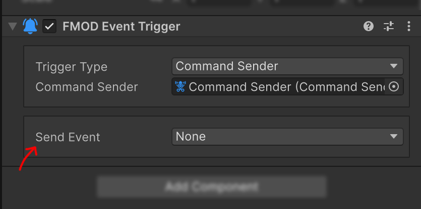

Event Trigger
FMODEventTrigger builds on the FMOD for Unity EventHandler to forward Unity GameObject, physics, mouse, and UI pointer events to an FMODAudioSource or CommandSender. It can play a Snapshot when an object enters an area or send a Parameter command from UI input without custom code.
Add the component
On the GameObject that should detect the Event, select FMOD Studio > FMOD Plus > FMOD Event Trigger from Add Component.

When using Trigger or Collision events, also configure the required Collider and Rigidbody on this GameObject. The actual Audio Source or Command Sender can be on the same or a different GameObject.
Trigger Type
Audio Source
Set Trigger Type to Audio Source to display these fields:

| Field | Action |
|---|---|
| Audio Source | The FMODAudioSource that receives playback and stop commands |
| Play Event | Invokes Play() for the selected Unity Event |
| Stop Event | Invokes Stop() for the selected Unity Event |
Stop() uses the target Audio Source Allow Fadeout When Stopping setting.
Command Sender
Set Trigger Type to Command Sender to display these fields:

| Field | Action |
|---|---|
| Command Sender | The CommandSender to execute |
| Send Event | Invokes SendCommand() for the selected Unity Event |
Stop Event is hidden for a Command Sender target and ignored at runtime.
Tip
To stop through a Command Sender, create a Sender with Stop behavior and execute it from Send Event.
Supported Events
Select None when that action should never execute.
| Category | Event | When it occurs |
|---|---|---|
| Lifecycle | ObjectStart |
When Start runs |
| Lifecycle | ObjectDestroy |
When the GameObject is destroyed |
| Lifecycle | ObjectEnable |
When the component becomes enabled |
| Lifecycle | ObjectDisable |
When the component becomes disabled |
| 3D Trigger | TriggerEnter, TriggerExit |
When another 3D Collider enters or exits the Trigger |
| 2D Trigger | TriggerEnter2D, TriggerExit2D |
When another 2D Collider enters or exits the Trigger |
| 3D Collision | CollisionEnter, CollisionExit |
When a 3D Collision begins or ends |
| 2D Collision | CollisionEnter2D, CollisionExit2D |
When a 2D Collision begins or ends |
| Object Mouse | ObjectMouseEnter, ObjectMouseExit |
When the pointer enters or exits a Collider area |
| Object Mouse | ObjectMouseDown, ObjectMouseUp |
When a Collider is pressed or released |
| UI Pointer | UIMouseEnter, UIMouseExit |
When the pointer enters or exits a UI area |
| UI Pointer | UIMouseDown, UIMouseUp |
When a UI element is pressed or released |